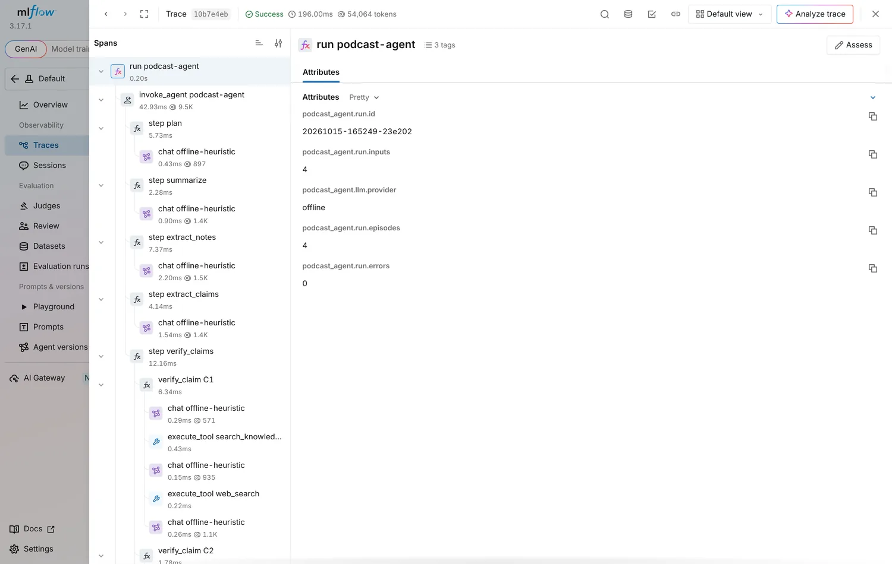

The shape: what goes in, what comes out, who decides
The assignment, the transcript formats the agent reads, and how it plans its own work.
What the agency asked for
Know the four tasks, the deliverables and where each one lives.
An ad agency gets raw podcast transcripts and needs three things for each episode: a summary of about 200–300 words, key notes for show notes and social posts, and a fact-check of the claims made on air. The brief also asks for a deployment strategy with a diagram and a narrative.
Two goals sit behind the tasks: show a multi-step agent that plans and executes on its own, and show a deployment that would hold up in real use. The table maps each requirement to the place it is answered.
| The brief asks for | Where it is |
|---|---|
| Summary, about 200–300 words: themes, discussions, opinions | agent/steps.py → summarize |
| Top 5 takeaways, quotes with timestamps, topic tags | agent/steps.py → extract_notes |
| Fact-check via search, a local knowledge base or reasoning; ✅ ⚠️ ❓ | agent/verifier.py, tools/, data/ |
| A multi-step agent that plans and executes | agent/planner.py, agent/pipeline.py |
| Runs locally in Docker; model local or in the cloud | Dockerfile, llm/ (Anthropic, Bedrock, OpenAI-compatible, Ollama) |
| Readable logs of reasoning steps | output/logs/run.log, trace.jsonl |
| One JSON or Markdown output with summary, notes, fact-check table | output/report.md, output/report.json |
| Deployment strategy: diagram and narrative | docs/DEPLOYMENT.md, docs/architecture.svg, chapter 5 |
✅ Verified true (confirmed by knowledge base KB-031), followed by a confidence such as 0.90. Speaker, timestamp and the evidence for each claim sit in a details block below the table.Where does a reviewer find every episode's summary, notes and fact-check table in one file?
One transcript in
Know the two input formats, how speakers are resolved and what cleanup keeps.
The agent reads JSON in the assignment's shape (episode id, title, host, guests and a list of timestamped lines) or plain text with lines like [00:02:14] Host: …. Text files may start with header lines (Title:, Host:, Guests:); a line without a timestamp continues the previous one.
Short labels are resolved to full names and roles: Dr. Priya becomes Dr. Priya Patel, guest; Host becomes the named host. Every line keeps its timestamp in seconds, so "01:20" and "00:01:20" compare equal.
When the planner sees filler, normalize_transcript removes um, uh, stutters ("the the") and filler phrases ("you know"). The cleaned text is what the model reads. The raw text stays on every line, so a quote can still be matched against exactly what was said.
# raw [00:03:05] Guest: Um, yeah. The the samples were collected by the Perseverance rover, which, uh, landed in Jezero Crater in February 2021. # clean [00:03:05] Guest: Yeah. The samples were collected by the Perseverance rover, which landed in Jezero Crater in February 2021.
ep001–ep003 provided
The three JSON transcripts from the brief: remote work, AI in healthcare, bootstrapping versus fundraising. Each is 190–325 words.
ep004 synthetic
A text transcript built from the brief's own example lines, with fillers and stutters added. It exercises the text parser and the fact-checker.
Cleanup removes "um" from a line. What happens to the original wording?
The agent writes its own plan
Know what the model decides, what the validator guarantees and what happens when the planner fails.
Before any work, the agent profiles the episode: word count, lines, speakers, sections, filler tokens and "claim signals" (numbers, years, named entities, prediction words). The fast model reads that profile and a capability catalog of five steps, then returns a plan: which steps, in what order, with what parameters, and one sentence of reasoning for each.
The model chooses the summary strategy (single pass or map-reduce), the claim budget (3 up to MAX_CLAIMS), the tools the fact-checker may use and its tool budget (2–6 calls per claim). A deterministic validator then enforces the guardrails. It adds missing required steps, puts verify_claims after extract_claims, removes duplicates and clamps parameters into range. Each repair is logged. If the planner fails outright, a fixed fallback plan runs, so autonomy never costs a deliverable.
| Capability | Required | Parameters the model sets |
|---|---|---|
normalize_transcript | no | none; planned when filler is found |
summarize | yes | strategy: single_pass or map_reduce |
extract_notes | yes | none |
extract_claims | yes | max_claims: 3 to MAX_CLAIMS (default 8) |
verify_claims | yes, after extract_claims | max_steps_per_claim 2–6; tools |
plan ◆ goal: Publish-ready show notes and a fact-check table for 'Space & Markets Roundup'.
plan ◆ 1. normalize_transcript — 11 filler/repeated tokens detected; clean before quoting.
plan ◆ 2. summarize {'strategy': 'single_pass'} — 122 words fits within the single-pass budget.
plan ◆ 3. extract_notes — Required show-notes deliverable.
plan ◆ 4. extract_claims {'max_claims': 8} — Claim signals (entities=8, years=4, predictions=3) …
plan ◆ 5. verify_claims {'max_steps_per_claim': 4, 'tools': ['search_knowledge_base', 'web_search']} — …The planner returns a plan without extract_notes. What happens?
Writing the show notes
The loop that keeps every model output honest, then the summary and the key notes it produces.
Structured outputs and self-correction
Know the three checks every model answer passes and what happens when one fails.
Every model step goes through one function, call_structured(). The answer must parse as JSON (code fences and stray prose are tolerated), match a Pydantic schema, and pass the step's own rules: a word count, exactly five takeaways, quotes that exist in the transcript, timestamps that exist. When a check fails, the specific problems are sent back to the model and it tries again, up to three attempts. After that the last valid answer is kept and a warning goes into the report.
Because this loop lives in the agent rather than in a vendor feature, it works the same on Claude, Bedrock, OpenAI-compatible servers, Ollama and the offline mode, and every rejection is visible in the log.
summarize ⇄ claude-sonnet-5-5 · 12,310 → 412 tok · 4.1s summarize ↻ attempt 1/3 rejected — the summary is 171 words; it must be 200–300 words — expand it using only the transcript summarize ⇄ claude-sonnet-5-5 · 12,734 (+12,288 cached) → 436 tok · 3.8s · attempt 2 summarize ✔ done in 8.2s — 238 words (single_pass, target 200–300)
Illustrative values. Your run's numbers are in output/logs/run.log.
A step's answer is valid JSON and matches the schema but breaks a step rule three times. What ends up in the report?
The summary: 200–300 words
Know how length is enforced, when map-reduce kicks in and why the transcript is cached.
The prompt asks for 200–300 words covering core themes, the key discussions in order and the opinions shared, attributed by name, in third person and present tense. The validator accepts 180–321 words, since the brief says "about", and rejects timestamps or bullet points. A miss goes back to the model with the exact count.
For a normal episode the summary is written in a single pass. The transcript is sent as a prefix shared by summary, notes and claim extraction, and on Anthropic and Bedrock that prefix is marked for prompt caching, so later steps read it at a fraction of the input price. Above MAP_REDUCE_THRESHOLD_WORDS (15,000 words, roughly 1.5–2 hours of speech) the planner switches to map-reduce: the fast model writes notes for segments of about 1,500 words, cut at section boundaries, and the main model reduces them into one summary.
spec default
Targets 200–300 words for every episode, as the brief asks.
adaptive
Lowers the floor to about 60% of a very short transcript. The provided episodes are only 190–325 words, so a 200-word summary would be nearly as long as the source.
SUMMARY_LENGTH_MODE=spec or adaptive. It is a one-line change you can make and rerun in under a minute.When does the planner choose map-reduce summarization?
Key notes: takeaways, quotes, topics
Know the contract for each list and how quotes are grounded in the transcript.
🔹 Takeaways exactly 5
One standalone sentence each, most important first, attributed when it is an opinion, with the timestamp of the line that supports it.
💬 Quotes 3–5
Verbatim spans of a single line, suitable for social posts. Each must match the transcript at 0.90 or better.
🧭 Topics 5–8
Tag-style labels normalized to kebab-case, such as async-communication.
Quotes are where models drift, so they are grounded, not trusted. Each quote is fuzzy-matched against single transcript lines, both cleaned and raw. A paraphrase scores below 0.90 and goes back to the model with the closest line's timestamp. When the words match but the model gave the wrong timestamp or speaker, the agent corrects both from the matched line and logs the fix.
notes ↻ quote 1: timestamp [00:15] → [00:45] (matched the source line) notes ↻ quote 1: speaker 'Mark' → 'Mark Rivera' notes 👁 quote [00:45] Mark Rivera: “Being remote doesn’t just mean a location; it means structured processes and trust.” (match 1.00)
The model returns a quote with the right words but the wrong timestamp. What does the agent do?
Fact-checking, the agentic part
How claims are found, how one claim moves through the tool loop, and how the verdict and confidence are set.
Finding the claims worth checking
Know what counts as a claim, how it is rewritten and how it stays tied to the transcript.
The fast model reads the transcript and returns the statements that should be checked before publishing: facts about organisations, products, regulations, events, markets, dates and numbers, plus predictions and personal anecdotes that listeners might take as fact. Pure opinion, advice, questions and pleasantries are left out.
Each claim is decontextualized, rewritten as a sentence that makes sense on its own: "They've written handbooks" becomes "GitLab, Automattic and Doist have written handbooks…". It gets a type (factual, statistical, historical, prediction, anecdotal), a time-sensitive flag, the speaker, the timestamp and a quote. The quote must match its line at 0.85 or better, or the claim is dropped. The planner's claim budget caps how many are checked.
| Type | Example from the transcripts | Usual outcome |
|---|---|---|
factual | Some hospitals use AI for reading X-rays or flagging urgent cases. | Checked against the knowledge base and web |
historical | Perseverance landed in Jezero Crater in February 2021. | Checked; dates matter |
prediction | Bitcoin will reach $200K by 2025. | Checkable once the deadline has passed |
anecdotal | I built a SaaS with no outside capital; we reached break-even in 18 months. | ❓ Unverifiable (personal anecdote) |
Why is each claim rewritten as a standalone sentence?
One claim, step by step
Follow a claim through the tool loop, with and without web search.
Each claim gets its own loop. Every turn, the model answers with one JSON object: an action (search_knowledge_base, web_search or finish), its input, and a one-sentence purpose for the log. It is never asked to write out its reasoning: Claude 5.5 declines that (a reasoning_extraction refusal), so the reasoning in the log comes from the API's own thinking summaries. The agent runs the tool and sends back an observation: numbered evidence with dates and relevance. Step through the Bitcoin claim from the brief's own example, then switch to "Search outage".
Budget
At most max_steps_per_claim tool calls (2–6, set by the planner), then the model must finish.
Guardrails
Evidence ids the model never saw are rejected. Unparseable turns are retried, at most twice.
Last resort
A loop that never produces a valid verdict lands as ❓ unverifiable at 0.20, flagged for human review.
Web search times out during a claim. What happens?
Verdicts and confidence
Know the three verdicts, the confidence caps and how a row is phrased.
✅ Verified true
Reliable, current evidence supports the claim as stated.
⚠️ Possibly outdated/inaccurate
Evidence contradicts it, shows it overstated, or shows it was true once but has changed.
❓ Unverifiable
No adequate evidence, a personal anecdote, or a prediction whose deadline has not passed.
Confidence means how strongly the evidence supports the verdict, not how likely the claim is to be true. The model reports a number and the agent caps it by the evidence actually gathered. Both values are stored, so you can see when the cap applied.
Each row records its method, one of the brief's three: knowledge base, web search, or reasoning step. The verification text follows the brief's style:
| Claim | Verification | Confidence |
|---|---|---|
| NASA recently announced a new Mars mission; it's launching in early 2026 to bring back samples. | ⚠️ Possibly outdated/inaccurate (contradicted by knowledge base KB-030) | 0.70 |
| The samples were collected by the Perseverance rover, which landed in Jezero Crater in February 2021. | ✅ Verified true (confirmed by knowledge base KB-031 and web search) | 0.90 |
| Bitcoin will reach $200K by 2025. | ⚠️ Possibly outdated/inaccurate (contradicted by knowledge base KB-032) | 0.75 |
| Humans will walk on Mars before 2040. | ❓ Unverifiable (future prediction) | 0.35 |
Rows from the committed offline-mode run (samples/offline-mode/report.md).
The model says 0.99 for a ✅ verdict backed by the knowledge base and the web. What confidence is reported?
Run it, read it, change it
Running on any provider, reading the reasoning log, and the changes you can make and rerun in minutes.
Run it on any model
Run the image with Claude, Bedrock, a local model or no model at all.
cp .env.example .env # add ANTHROPIC_API_KEY=…
docker build -t podcast-agent .
docker run --rm -t --env-file .env -v "$PWD/output:/app/output" podcast-agentdocker run --rm -t -e LLM_PROVIDER=offline -v "$PWD/output:/app/output" podcast-agent
docker run --rm -t -v "$PWD/output:/app/output" -v "$HOME/.aws:/home/agent/.aws:ro" \ -e LLM_PROVIDER=bedrock -e AWS_PROFILE=default -e AWS_REGION=us-east-1 \ -e BEDROCK_MODEL=<model or inference-profile id> podcast-agent
docker compose --profile local-llm up -d ollama docker compose exec ollama ollama pull llama3.1:8b LLM_PROVIDER=ollama docker compose run --rm agent
| Provider | Select with | Main / fast model |
|---|---|---|
| Anthropic API | ANTHROPIC_API_KEY (auto) | claude-sonnet-5-5 / claude-haiku-5-5 |
| Amazon Bedrock | LLM_PROVIDER=bedrock + BEDROCK_MODEL | your Bedrock model ids |
| OpenAI-compatible | LLM_PROVIDER=openai + OPENAI_MODEL | any chat-completions server |
| Ollama | LLM_PROVIDER=ollama | OLLAMA_MODEL (llama3.1:8b) |
| Offline | LLM_PROVIDER=offline (auto with no key) | deterministic heuristics |
--today 2026-10-13 for repeatable verdicts.You have no API key on hand and need to show the full pipeline running. What do you run?
Read the reasoning log
Read a run from plan to verdict and find any decision in seconds.
Every event goes to three places: the console, output/logs/run.log for people, and output/logs/trace.jsonl for machines. Each JSONL record carries run_id, episode_id, step, kind and message, which is what you would ship to an observability stack. run_manifest.json adds the provider, prompt version, per-step timings and token usage.
grep '↻' output/logs/run.log # every self-correction grep '⚖️' output/logs/run.log # every verdict grep 'verify C3' output/logs/run.log # one claim end to end jq -r 'select(.kind=="action") | .message' output/logs/trace.jsonl
Which file would you send to an observability stack?
Change it live
Make the common changes quickly and know what each one touches.
Every recipe below can be made and rerun quickly. The fastest loop is local Python with offline mode or a pinned date; the Docker image works the same once rebuilt, or with data/ mounted.
python3 -m venv .venv && .venv/bin/pip install -e ".[dev]" source .venv/bin/activate podcast-agent run data/transcripts/ep004_pdf_example.txt --out output --provider offline --today 2026-10-13
Add a fact the checker can use data only
Append an entry to data/knowledge_base.json with an id, title, content, source, url, as_of date and tags. Check retrieval, then rerun one episode. With Docker, mount data/ so the new fact is used without rebuilding.
podcast-agent kb "Mars Sample Return launch" podcast-agent run data/transcripts/ep004_pdf_example.txt --out output --provider offline docker run --rm -t -e LLM_PROVIDER=offline -v "$PWD/data:/app/data:ro" -v "$PWD/output:/app/output" podcast-agent
Swap the model or provider config only
No code change. The provider interface maps a tier (main or fast) to each vendor's model.
podcast-agent run --model claude-opus-5-5 --fast-model claude-haiku-5-5 podcast-agent run --provider ollama --model llama3.1:8b LLM_PROVIDER=bedrock BEDROCK_MODEL=<id> podcast-agent run
Show resilience: break web search demo
Inject failures into the mock search engine and watch retries, the error observation and the knowledge-base fallback in the log. Confidence drops to the one-source cap instead of the run failing.
MOCK_SEARCH_FAILURE_RATE=1 podcast-agent run data/transcripts/ep004_pdf_example.txt --out output --provider offline grep -E 'retry|unavailable|⚖️' output/logs/run.log
Change summary length or claim budget config only
SUMMARY_LENGTH_MODE=adaptive podcast-agent run --provider offline podcast-agent run --max-claims 4 --provider offline MAX_STEPS_PER_CLAIM=6 podcast-agent run --provider offline
Make fact-checking stricter one function
The caps live in calibrate() in agent/verifier.py. For example, require the knowledge base and the web to agree before a ✅ can exceed 0.6:
elif len(sources) == 1:
cap = 0.6 if verdict == Verdict.VERIFIED else 0.9 # was 0.9 for every verdictAdd a new step, such as chapters three files
Register a function, add it to the capability catalog so the planner can schedule it, and render it in the report. The validator and executor pick it up automatically.
@register("extract_chapters") def extract_chapters(ctx, state, params): res = call_structured(ctx, step="extract_chapters", schema=ChaptersOut, system=CHAPTERS_SYSTEM, prompt=CHAPTERS_PROMPT, cache_prefix=episode_context(state.episode)) state.chapters = res.value.chapters return f"{len(state.chapters)} chapters", res.attempts # planner.py: add "extract_chapters" to capability_catalog() and CANONICAL_ORDER # report.py: render state.chapters in render_markdown()
Edit a prompt prompts.py
All prompts are in prompts.py. Bump PROMPT_VERSION after an edit: it busts the response cache and is recorded in the run manifest, so every output can be traced to the prompt that produced it.
You add a new step function with @register. What else must change before the planner can schedule it?
Deploying it for an agency
The production shape, what it costs and how it scales and fails, and how data, quality and operations are handled.
From laptop to production
Know the production components and the life of one job. Click a component for details.
Episodes arrive in bursts and nobody waits on a spinner, so production is asynchronous: the API only accepts work and queues it, and stateless workers run exactly the agent you ran locally. The worker, the queue adapters, the Docker image and a lint-clean Helm chart are built; the managed services below are the proposed design.
| # | Stage | What happens |
|---|---|---|
| 1 | Ingest | The transcript lands in S3 (KMS-encrypted). A job row with an idempotency key (hash of transcript, prompt version and models) goes to Postgres, and the job is queued on SQS. |
| 2 | Execute | A worker long-polls SQS and runs the agent. Every model call goes through the model gateway. |
| 3 | Persist | Reports and the trace go to S3 and Postgres. report.json is written last as the commit marker; only then is the message deleted. |
| 4 | Review | Editors see the notes beside the fact-check table. ⚠️ verdicts, ❓ on factual claims and low confidence are routed for attention. |
| 5 | Publish | Approved notes go to the CMS or social scheduler by webhook, and Slack gets a "ready for review" notice. |
A worker is evicted halfway through an episode. What happens to the job?
Cost, scale and failure
Know the unit cost, the real scaling ceiling and how each failure is handled.
| Step · 60-minute episode | Model | In tokens | Out tokens | Cost |
|---|---|---|---|---|
| Plan | Haiku 5.5 | 0.8k | 0.2k | $0.0002 |
| Summarize (writes prompt cache) | Sonnet 5.5 | 12.3k | 0.45k | $0.035 |
| Key notes (reads prompt cache) | Sonnet 5.5 | 12.3k | 0.8k | $0.010 |
| Claim extraction | Haiku 5.5 | 12.5k | 1.2k | $0.002 |
| Verification, 10 claims | Sonnet 5.5 | 40k | 4.5k | $0.125 |
| Total | 78k | 7k | ≈ $0.17 |
List prices checked 2026-10-13: Sonnet 5.5 $2 / $10 and Haiku 5.5 $0.10 / $0.50 per million input / output tokens; cache reads 0.05× input; Batch API 50% off.
Verification dominates, so the first lever is tiered verification: run the loop on Haiku and escalate only ⚠️ or low-confidence claims to Sonnet, which brings an episode to about $0.09. Backlog goes through the Batch API at half price. At agency volumes the fixed infrastructure costs more than the tokens: 500 episodes a month is under $100 of model spend.
Scale: workers are stateless and KEDA scales them on queue depth, about 2 messages per replica, from zero. The real ceiling is the model provider's rate limit, so the gateway meters tokens per minute, priority queues keep rush jobs ahead of backfills, and the replica cap sits below the provider quota.
| Failure | Handling | Status |
|---|---|---|
| Malformed or invalid model output | Validated, fed back, up to 3 attempts; kept with a warning | built |
| Planner fails | Validator repairs; fixed fallback plan | built |
| Search outage | 3 retries, then an observation; falls back to the knowledge base | built |
| One step fails | Only its dependents are skipped; the report ships with warnings | built |
| Worker crash or eviction | Message not deleted, so it is redelivered; SIGTERM drains the current job | built |
| Duplicate delivery | Idempotency key; finished jobs acknowledged without new model calls | built |
| Provider 429 / 5xx | SDK retries with backoff; gateway fails over Bedrock → Anthropic → self-hosted | retries built |
| Zone or region loss | Multi-AZ EKS and Aurora; S3 replication and snapshots | proposed |
What actually limits how fast this system can process a big backlog?
Security, observability and quality
Know how data is protected, how a run is observed and how quality is measured over time.
Security and privacy
- SSO with producer, editor and admin roles
- Tenant isolation: row-level security, per-tenant S3 prefixes and KMS keys
- Bedrock over PrivateLink; no training on customer data
- IRSA and External Secrets; no static keys; read-only root filesystem
- Tools are read-only and allow-listed, so a malicious page can at most sway a verdict a human reviews
Observability
- Built: OpenTelemetry traces and metrics, traces fanned out to Jaeger and MLflow, Prometheus alerts and a Grafana dashboard (module 16)
- Model payloads in Langfuse or Arize Phoenix
- Metrics: latency per step, tokens and dollars per tenant, cache hit rate, self-correction rate, quote match rate, verdict mix, queue depth, DLQ count
- SLOs: 99% of jobs without manual help; p95 under 5 minutes per hour of audio
Quality
- Built: labeled claims and per-episode expectations gate CI; Claude runs them nightly with a rubric judge (module 17)
- Deterministic gates: summary length, 5 takeaways, 100% verbatim quotes
- Fact-check accuracy per verdict class against labels
- Editor overrides feed the golden set
| Footprint | When | Shape |
|---|---|---|
| Single VM | Pilot, one team | docker compose and a worker on a dir:// queue |
| Serverless AWS | Low ops, spiky volume | API Gateway + Lambda, SQS, Fargate tasks running worker, S3, Aurora Serverless |
| Cloudflare | Global edge, minimal ops | Workers API, Queues, R2, D1, AI Gateway; the agent in Cloudflare Containers |
| Kubernetes | Multi-tenant enterprise | EKS, AKS, GKE or OKE with this Helm chart and Argo CD |
| Self-hosted | Regulated or confidential | Same chart; open-weight model on vLLM; internal knowledge base; external search off |
A web page in search results contains instructions aimed at the model. What limits the damage?
Operating it: telemetry, evals and GitOps
Following one run end to end, knowing whether the agent is any good, and how a merge becomes a running deployment.
Following one run: OpenTelemetry
Know the span tree, what is and is not recorded, and how a trace links to the audit trail. Click a span or a backend for details.
Every run is one OpenTelemetry trace. Span names and gen_ai.* attributes follow the GenAI semantic conventions, so a backend that understands them (Jaeger, Grafana Tempo, Langfuse, Phoenix) shows model calls, tokens and tool calls without custom parsing. Telemetry is off unless configured through the standard OTEL_* variables. Spans carry ids, counts, models and verdicts and never transcript or model text, unless content capture is switched on for debugging.
The agent exports once, to an OpenTelemetry Collector, which fans every span out to two trace backends. Jaeger answers where did the time go. MLflow reads the gen_ai.* attributes and shows the same run as an agent trace: invoke_agent becomes an AGENT span, chat a CHAT_MODEL span, execute_tool a TOOL span, and token usage adds up on the trace. Each exporter queues and retries on its own, so MLflow being down never costs Jaeger a span, and CI proves it on every pull request by stopping MLflow mid-run. The MLflow exporter came from Joseph Fluckiger's AIMUG talk, which showed MLflow tracing LangGraph agents next to a Jev decision model.

gen_ai.operation.name, and no transcript text appears because content capture is off.| Metric | Type | Sliced by |
|---|---|---|
gen_ai.client.token.usage | histogram | input or output · provider · request and response model |
gen_ai.client.operation.duration | histogram, seconds | provider · model · error.type on failure |
podcast_agent.verdicts | counter | ✅ / ⚠️ / ❓ · claim type |
podcast_agent.self_corrections | counter | step |
podcast_agent.tool_calls | counter | tool · ok, empty or error |
podcast_agent.episodes | counter | ok, partial or failed |
make observe # Collector, Jaeger :16686, MLflow :5050, Prometheus :9090, Grafana :3000, a traced run, an e2e check make observe-outage # stop MLflow, check a run still reaches Jaeger, restart it, check the queued spans arrive # the run's trace id is in its manifest, and on every line of logs/trace.jsonl python -c "import json; print(json.load(open('output/observe/run_manifest.json'))['otel_trace_id'])"
A run used Claude with the default telemetry settings. What can someone with access to Jaeger or MLflow read?
Is it good? Evals and gates
Know what is measured, where the thresholds live, and why the gates only ever tighten.
Tests say the agent runs; evals say whether it is right. evals/datasets/factcheck.jsonl holds 25 claims, each with the verdict a careful fact-checker would give on a fixed date and why. episodes.yaml says what a good run of each transcript must contain. podcast-agent eval scores both, and the thresholds in evals/suites/*.yaml turn the scores into gates.
Offline suite every PR
The 25 claims go through the offline heuristics, and both committed runs are scored from their files, with no model calls. Its 19 thresholds are pinned to today's scores, so a change that lowers any one of them fails CI.
Live suite nightly
Claude on the same claims, a fresh run of every transcript, and a rubric judge on each summary. It runs when the repository has an API key secret and is compared with the last accepted baseline.
Rubric judge
Faithfulness (weight 0.5), coverage (0.3) and concision (0.2), each rated 1 to 5 against the transcript, minus 0.15 per statement the transcript does not support.
Scoring the committed Claude run found exactly one miss: Humans will walk on Mars before 2040
came back ⚠️ at 0.60. A prediction whose deadline has not passed cannot be checked yet, but only the prompt said so. The fix enforces that rule in code after the model's verdict, and the dataset's future-deadline cases keep it fixed.
| Metric | What it asks | Offline suite |
|---|---|---|
verdict_accuracy | Is the verdict one of the acceptable ones? | 0.96 · gate ≥ 0.96 |
macro_f1 | Good on ✅, ⚠️ and ❓ alike, so answering ❓ to everything cannot score well | 0.92 · gate ≥ 0.91 |
citation_validity | Does every ✅ or ⚠️ cite knowledge-base or search evidence? | 1.00 · gate 1.0 |
brier | Is the confidence on ✅ and ⚠️ calibrated? Lower is better | 0.03 · gate ≤ 0.05 |
quote_fidelity | Are the run's quotes verbatim in the transcript? | 1.00 · gate 1.0 |
claim_verdict_accuracy | Did the run check the expected claims correctly? | 0.92 on the Claude run |
make evals # offline suite; exits non-zero on any threshold miss podcast-agent eval --score output # score any run folder, no model calls podcast-agent eval --suite evals/suites/live.yaml --out evals/reports/live # Claude, with the key in the environment
A prompt change raises verdict accuracy but drops quote fidelity on the committed run from 1.0 to 0.95. What happens in CI?
From merge to cluster: GitOps and the supply chain
Know how a merge becomes a running deployment, what is checked on the way, and what nobody can skip. Click a stage for details.
Git is the only way anything reaches a cluster. CI builds an image once per merge and never talks to a cluster; Argo CD watches main and renders the Helm chart once per environment. Promoting a release means changing one digest in Git, by pull request.
| Environment | Shape | Sync | Image |
|---|---|---|---|
| dev | values-dev.yaml: offline provider, no API key, no cloud dependencies, so it runs on kind | automated, prune, self-heal | digest of the latest build on main |
| prod | values-prod.yaml: External Secrets, KEDA workers, OpenTelemetry at 25% sampling, alert rules | manual | digest released as vX.Y.Z |
make helm # every environment against values.schema.json, then kubeconform including the CRDs make gitops-e2e # Argo CD on a throwaway kind cluster deploys dev from HEAD and calls /healthz gh attestation verify oci://ghcr.io/organized-ai/podcast-agent:v0.2.0 --repo Organized-AI/podcast-agent
Release v0.2.0 is tagged. How is the prod image built?